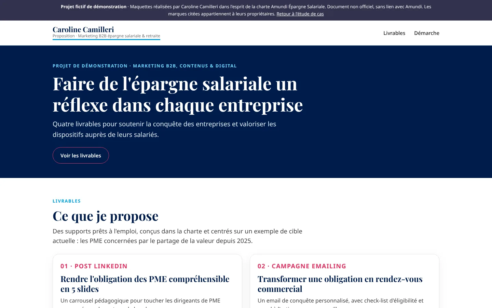

Caroline Camilleri
Product Owner et cheffe de projet digital, je conçois et pilote des produits digitaux depuis 20 ans.
Trois études de cas
Trois projets fictifs, réalisés avec Claude et Claude Code dans trois univers de marque différents. Chacun se lit en deux minutes.
-
Univers SIPLEC (Mouvement E.Leclerc)
Gestion de flotte : détecter une consommation anormale
Passer d'un cadrage produit B2B à un prototype cliquable : de l'alerte à la décision, puis à la traçabilité.
-

Univers Amundi Épargne Salariale
Quatre supports marketing B2B
Décliner un même message réglementaire pour quatre publics, du post LinkedIn à la brochure commerciale.
-

Univers UGC
Assistant de choix de séance et parcours d'abonnement
Passer d'une hypothèse produit à deux prototypes cliquables, avec une note produit pour l'équipe et la DSI.
Ce sont des explorations : aucune commande client, aucune donnée réelle, aucun résultat mesuré. Elles montrent une façon de travailler, pas une performance.
Ma méthode avec l'IA
Les mêmes étapes que pour piloter une agence. L'IA produit, je cadre, je vérifie et j'arbitre.
-
Cadrer
Je choisis le problème à explorer, la cible et le périmètre. Ce qui ne sert pas l'objectif sort du périmètre.
-
Briefer
Je rédige un brief et un design system : couleurs, composants, ton, accessibilité, interdits. L'IA s'y réfère à chaque demande.
-
Itérer
Je demande des changements précis, un sujet à la fois. Chaque version est publiée et relue.
-
Recetter
Je vérifie le rendu mobile, le clavier, les contrastes et l'exactitude des contenus. Je fais corriger ce qui ne va pas.
-
Publier
GitHub et GitHub Pages : chaque version est datée, traçable et consultable en ligne.